Kurt Mahler (1903-1988)
Mahler contributed many, many beautiful results to transcendence theory. He also formulated his famous A-, S-, T-, U-classification of real and complex numbers, and proved that almost every real or complex number is an S-number. I can't remember where I read that he used 'S' as a tribute to Siegel (can anyone confirm that?), and simply used 'T' and 'U' since they follow alphabetically! 'A', of course, is for algebraic . Originally I had quite a bit typed up of his classification - especially on its motivation - but in a bad moment I removed it, as I could see no end in sight.
So, just some of Mahler's results, and I begin with one - from 1937 - which is often mentioned, possibly because it is so eye-catching: the infinite decimal 0.1 2 3 4 5 6 7 8 9 10 11 12 13... is transcendental (can you see why it is certainly irrational?). Actually Mahler's full theorem is that if f( x ) is any non-constant polynomial such that f(1), f(2), f(3), ... are all natural numbers, then the decimal formed by concatenation of those values is transcendental. The result is true, in fact, not just in base 10, but in any base 2, 3, 4, ... .
>
Msee := proc(f, r) local a, k; a[1]:=f(1):
for k from 2 to r do a[k]:=a[k-1]*10^length(f(k))+f(k)
od: print(a[r]*`...`); end:
>
Thus, for example, choosing 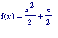 , we have that the infinite decimal:
> Msee(x -> x^2/2 + x/2, 20);
>
is transcendental by Mahler's theorem. Incidentally the decimal number 0.1 2 3 4 5 6 7 8 9 10 11 12 13... is known as the Mahler-Champernowne number, with C's name incorporated, since it was he who proved in a 1933 paper that the above number is a normal number in the base 10.
Many will have heard of the famous Catalan problem (only recently solved): are 8 and 9 the only consecutive proper powers? In other words are ( x , y , m , n ) = (3, 2, 2, 3) the only solutions of the Diophantine equation 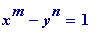 in natural numbers x , y, m , n , with m and n both greater than 1. That there could be at most a finite number of solutions is a minor consequence (which I leave as an exercise) of the much more substantial:
Mahler's Theorem. Let m and n be natural numbers - one of which is at least 2, the other at least 3 - and let a and b be any non-zero integers. Then the greatest prime factor of 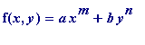 tends to infinity as max( ) tends to infinity, subject to the restriction that gcd(x, y) = 1.
Note that one does need the "at least 2, the other at least 3" , as the example 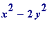 shows (it is '1' infinitely often). Note also the relevance of the gcd(x, y) = 1 restriction: if, for example, one took 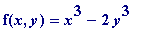 and set 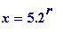 and 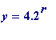 ( r any natural number), then one would have
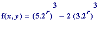 = 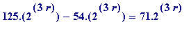 ,
whose largest prime factor (71) remains static as r is made increasingly large.
Mahler's proof of the latter theorem depended on his own p -adic version of the Thue-Siegel theorem.
Mahler's Theorem (1929). Let
 be any non-zero algebraic number with
, and let
be any real algebraic number of degree 2, then
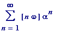
is transcendental (where [
x
] denotes the integral part of
x
).
be any non-zero algebraic number with
, and let
be any real algebraic number of degree 2, then
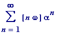
is transcendental (where [
x
] denotes the integral part of
x
).
Mahler's Theorem (1929). Let
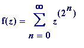
(=
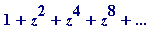
), and let
 be any non-zero
be any non-zero
algebraic number with , then 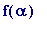 is transcendental.
There is a very fine exposition of those two latter results, with many extensions, in a paper by Loxton and van der Poorten in the Baker & Masser 1977 Proceedings .